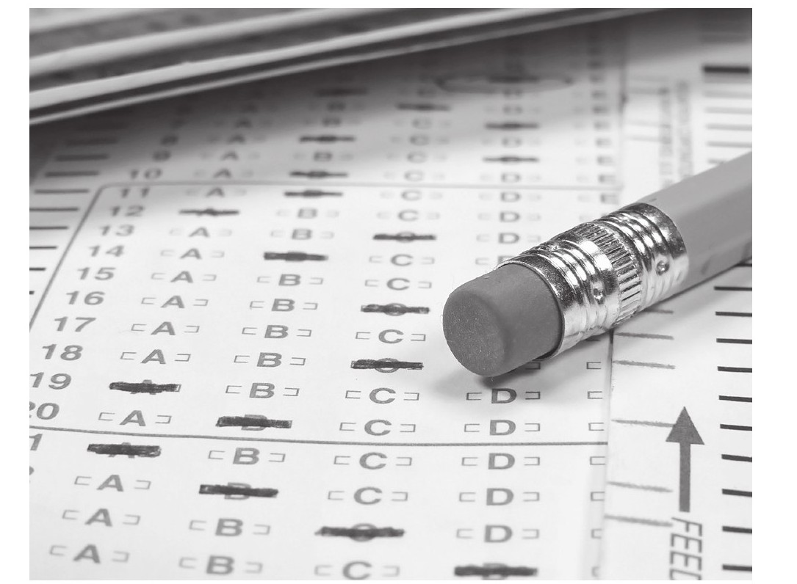
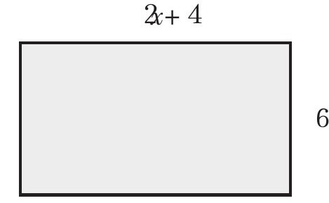

在现有的数学考试体系中，学生们被一种极为荒谬的考试标准过度地测试着，而且这种考试模式严重破坏了学校和老师的教学方式，更为重要的是，它还严重影响了学生们的身心健康，甚至是对于生活的思想态度。[书籍免费分享微信jnztxy]
Alfie Kohn将这种考试形容为“怪兽”。[1]幸运的是，我们及时发现了一种新型数学测评模式，不仅前景看好，而且效果显著，这种测评模式不但能够评估学生们掌握了多少数学知识，还有助于改善和提升学生们的数学学习效率，并为我们的数学教育教学改革提供了有力支撑。这种测评被称为“学习能力评估测试”，经证实，它能够对学生们的学习能力起到一定的促进作用，能够显著地改善学生们的学习成绩和学习态度。
这种对数学学习能力的评估主要集中在自主学习者身上，即那些拥有足够的学习能力和知识水平引导自己开展数学学习的人。众所周知，数学考试这只“怪兽”对于课堂教学和学生们的学习有着巨大影响力——数学本身就拥有足以使年轻人精神崩溃的力量。不过现在有希望了，一种评价数学学习的新模式出现了（当然该方法也有可能适用于其他学科），这种考试模式不会让孩子们感到恐惧，不会歪曲数学课程的本质，而且还有助于促进学生们的数学学习向更高水平发展。如果你感觉太难以置信的话，那么请继续往下读。
在欧洲，几乎每个国家的任何学科、任何层级的考试中，我们都很难在试卷上找到单选题型，但在美国这是一种普遍的考试形式。我找到了其他国家在数学考试中不采用单选题的四个原因：第一，侧重于对数学理解力的考察，这其中就涉及了学生思维过程，以及运用语言、数字和符号等表达方式的能力。只有学生们将自己的思考过程在试卷上写下来才是表现他们对知识理解程度的最佳诠释，而那种4选1的题型即使做对了也说明不了什么问题。第二，单选测试题存在一定的偏差性，特别是对于少数民族的学生来讲。有许多还未证实的现象表明，单选测试题的偏差对于参加测试的女学生来讲也有着极为不利的影响，但是在进入高校后，女学生的学习成绩要普遍高出男学生许多[2]。第三，在有时间限制的考试类型中去做选择题往往会使学生们产生焦虑情绪，直接导致全美国孩子们的数学学习压力[3]。第四，这种选择题型的考试最终结果仅仅是筛选出那些擅长做这类题目的学生而已。很显然，一些学生很擅长这种类型的考试，并且通常都能取得不错的成绩，其他学生则不然，甚至是那种天赋极高且知识丰富的学生。如果想知道一名学生掌握知识的程度，那么单选题的测试模式不会说明太多的问题。总之，我们通过考试想考察的是学生们在将来的工作岗位上应对实际问题以及处理复杂问题的能力，而单选题型无法做到。
掌握解题套路固然重要，但这只适用于解题思路明确的情况。而如果学生们连解题套路所适用的背景条件都不知道，或者缺乏将各种单一解题套路联系起来去处理稍微复杂问题能力的话，那么这种考试的意义何在呢？其实最为悲剧的还不是这种考试不能达到对学生数学能力测评的目的，而是对学校的数学教育有着巨大且极具破坏力的影响，因为学校教学的最终目的是应付这类考试。在美国，几乎每所学校的数学老师都有可能抱怨，这种所谓的数学标准化考试严重地影响了课堂教学和学生的正常学习。在数学课堂上，老师们的教学重点是那些在考试中出现频率较高的知识点，而不是在生活和工作中能够发挥重要作用的知识点。学生们同样受限于考试压力而无法在学校学习到更为宽泛的数学学科内容。
正如Kohn写道：“在课堂上看到孩子们自发地提出有价值问题的教学场景一去不复返了。对于数学的学习兴趣会把教育引入一个方向，而考试涉及的所谓学科知识点会把教育引入与之相反的方向。”[4]
研究表明，这种标准化考试对学校教育的影响完全是消极的。所谓“高利害考试”，就是指那些对学生的学习生涯具有重大影响的考试，因为这种考试直接关系到他们能否顺利完成课程、毕业以及升入大学。这种考试形式正在向全国普及。
Audrey Amrein和David Berliner[5]曾对“高利害考试”与其他考试类型进行了州际的对比研究。他们发现，在18个州的样本中就有17个州采用“高利害考试”，而学生们的学习状况仅能保持原有水平甚至有所下降。而且这种“高利害考试”还会产生一些无法预料的消极结果，比如迫使某些课程的老师离职、增加高中的辍学率、削弱教师群体的能力以及学校的教学资源。波士顿高中的校长Linda Nathan就直言不讳地对外宣称，学生们辍学就是“高利害考试”所导致的恶果[6]。
其实如果思考一下这些考试是如何评估数学教学水平的，就能很轻易地发现为什么这些测试对学校教育会产生消极影响，以及加深教育的不平等化了。下面是一道来自SAT-9的美国标准典型测试题：
4x+120=1000
4x-120=1000
4x=1000
4x-1000=120
首先，如果这道题让你回忆起以前在学校数学课堂上的痛苦经历，并且那是你离开学校后不想再回忆起的往事的话，在这里我先表示自己的歉意。不要因为你没做出这道题而认为自己数学学得很差或者认为自己缺乏应对数学的能力，因为这道题的题干中存在错误，以至于根本无法对学生教育进行有效的数学评估。我们来看看题目中所使用的措辞：
这种表达方式很不规范，看上去就好像是故意误导学生一样。题目中使用的“缠绕、线圈”等词汇学生并不熟悉，“为新家庭安装完电线”这一描述容易使人感到奇怪和不解。如果学生们能闯过考试语言这道关，并且能够理解题目所表达的真实含义的话，那么很快就能计算出电线长度的表达式为：x=（1000-120）÷4，但是这个结果又不在备选答案当中。
我们不禁疑惑，这个奇怪的问题到底在评估学生的何种能力呢？我想，在面对这种奇怪的选择题时要树立信心，其实只需要了解线圈的常识以及能翻译这种蹩脚的语句就足以解决它了，而这些能力恰恰与数学学习毫无关系。
当然这种实际背景与数学胡乱融合的应用题并不意味着将生活与数学相联系就会效果不好，因为这样的现实型应用题本可以设置得使人感兴趣，并促使学生们去积极思考。但是在课堂上使用这种应用题的教学方式又与考试中该类题目的考查方式存在一定差别。在其他一些国家的考试中，使用这种现实应用题主要是为某些特定的学生群体设置“壁垒”，当然这也可以理解成为保护本国学生的利益所采取的一种措施，而这确实导致了考试不公平。
下面的例子是我们在斯坦福大学工作时所设计的一套测评试题。在我们大规模开展的对数学教学的研究中，我们发现一些学生，在这项测试中可以取得好成绩，但是在标准化考试中却无法有好的表现：

a.5x-3=101
b.3x-1=2x+5
以上的这些问题都称不上是优秀的测评题目，因为我们让学生们所回答的都是简答题，这与学校传统教育中的题目有些相似，但是与标准化测试相比，这种题目在某些方面做出了重大改善：第一是该题型语义明确，不是那种让人看不懂的现实应用题；第二是这种题型为学生们创造了公平竞争的平台，而不会使那些善于做选择题的人有更多机会获得高分；第三是题目简洁明了，不使用那些句式冗长且语法复杂的语句；第四也是最重要的是，这种题目考查的是学生对数学的理解能力。这种类型的考试可以向阅卷人传递更多有关学生们掌握数学知识程度的信息，要比SAT-9这样的标准化考试显现的信息更为有效。
而且我们有同样足够多的证据表明，在标准化测试中的数学考试其实对语言能力的测评占据了较大成分。在2004年加州进行的标准化考试当中，学生们在数学单元和语言理解单元得分的相关系数大约是0.932。从统计学角度讲，相关系数较高且为正相关的话，一般预示着这两部分所考查的核心内容是无差别的。我敢说就算是换个时间、换个场合重新再考一次的话，那么结果都有可能无法出现如此高的相关系数。当然，如此之高的相关性，可能与学习基础好的学生在这两个测试单元都取得了不错的成绩有关系，但是0.932的高系数着实使人惊讶。因为在语言测试单元中不涉及数学方面的知识，而在数学测试单元中则使用了各式各样的语言措辞，由此推断，这两个单元具有如此之高相关性的原因只可能有一个：数学单元的考试实质上测试的是语言能力。而正是这种题目设计存在本质性偏差的考试，被用来判断学生的数学掌握程度，并且干涉了学校的数学教学。
当我还在Railside高中进行调研时，在这所学校的数学课堂上我结识了来自尼加拉瓜的Simon，他在自己还是小孩子的时候就来到了这座城市。Simon告诉我，他在义务教育时期的学习十分不顺利，由于语言的障碍使得他很难听懂老师讲课的内容。但是自打他踏入这所学校的时候起，情况完全改变了，他在学校课堂上的表现很出色，并且所有课程的成绩都非常优异。这都要得益于老师在教学改革方面取得的显著成果。他对我说，Railside高中的老师让他知道了自己其实很聪明的事实，由此他开始逐步建立起自信并取得了令人可喜的成绩。Simon对我说他非常喜欢数学，在各种类型的考试中，包括斯坦福大学的测评，他都取得了不错的成绩。但是尽管如此，他并不能很好地应对加州的标准化测评考试。
当然这其中的原因与数学学习没有半点关系，而是源于不熟悉的语言及文化背景差异，还有让人感到怪异的考试题型。在Railside高中，许多以英语为母语的学生在这种类型的考试中同样出现了成绩不理想的情况。老师们则迫于升学压力不得不在极其重要的数学课上花尽量少的时间来讲解知识，而将大把的时间用于训练学生们如何应对这种以选择题为主的考试上。其实我们大家都不愿意看到这种情况，尤其是以牺牲学习真正的数学知识和方法为代价。
这种存在缺陷的考试制度对于学生们的数学学习造成了极为负面的影响，更加棘手的是这让学生们陷入了不得不去为考试分数而发愁的困难境地。当用考试分数而不是以数学学习能力来评判学生时，一方面不能提供客观可靠的评价信息，另一方面也有可能严重伤害到学生的信心。
一项考试本应该考察的是学生们在一定时期内学习与掌握知识的程度。至少来说，考试最基本的应该去考察学生们知道什么以及不知道什么，以便于在接下来进一步开展教学。像Simon这样看到自己的考试成绩低于他人的所谓“事实”只会使他情绪低落。在Railside高中，Simon学习非常努力，并且掌握了许多有用的知识，但是受制于这种基于语言和文化背景的考试使他无法完全展现自身的学习水平。他在考试中的成绩不尽理想，而且他并不知道自己在考试中哪些题型错误率较高以作为后期学习重点，或者与前一次考试相比自己在哪些方面取得了进步（或者有显著改善），相对地他只是收到了一张成绩单而已，上面简简单单地写着分数。
然而这张成绩单并没有那么真实，而且存在着很多不公平的地方，比如说在某些州的考试中允许使用计算器，而Simon所在的加州则不允许使用计算器。在成绩单上，只有一行冷漠的语句简单告知Simon“他的成绩位于平均成绩以下”。他父母看到了邮件中的成绩单，对Simon的学习能力产生了严重的质疑，尽管他在学校的成绩表现很优异。正如他对我们所说：“我无言以对，就好像自己的成绩确实在平均成绩以下。况且事实也摆在那里，而且当面临这种情况时，你总会不自觉地去想自己的成绩本可以比平均成绩高一些的。”
我问他这样的考试结果是否会影响他对自己数学能力的评价，他做出了肯定回答：“你做了很多努力，但只是得到这样一份成绩单，你的反应肯定是‘我的天啊！我原本是如此的努力，这怎么可能’。”
像Simon参加的这种测评考试只会得到学业水平低的假象，从而击垮学生们的自信心，并最终将他们定格为“低水平学生”。而在Simon接到成绩单的那一刻，基本上这个州有半数的学生被告知他们的成绩（掌握知识程度）“基本达标”“勉强达标”甚或是“远未达标”。我不禁怀疑这又能起到什么作用呢？
我们可以从一些研究结果中发现，是否拥有坚定的信心是一个人对数学具有学习积极性以及在未来取得成就的最关键的因素。而学生的成绩单上面的结果却是在告诉他们，不要在数学学习上面白费力气了。
更糟糕的是，许多老师竟然认为，应该将这种考试形式引入课堂教学，并将其作为平时测验的一种模式。我认识的许多美国数学老师每周都会举行一次这样的小测验，通常在每章课程讲解结束时，学生们就会做相应的章节练习题。有些老师对学生们的测试则更为频繁，以至于学生们学习数学知识的时间与参加各类考试的时间几乎相等。老师们对于这种考试除了给出试卷评分外，就不再针对试卷做任何其他的分析了，在将已评分的试卷返还给学生后，接着进行下一阶段的教学内容。
国际知名教育评估专家Dylan Wiliam对此有个形象的比喻：一位飞行员驾驶着飞机朝着目的地纽约飞行。过了一段时间，他将飞机降落在附近的一个飞机场上，然后向乘客们询问：“我们是不是到达纽约了？”其实不管他们是否真的到达了纽约，所有乘客都会被要求走下飞机，然后飞机继续飞往下一个目的地。美国的老师们就像这位飞行员一样，他们完成一个章节或单元的教学后都会给学生们测验，然后讲下一个章节，不管学生们是否跟上了数学教学的节奏。
当然在每一个章节结束后进行一次测试的方法固然可取，但是这种没有具体指向性和目标性的考试通常意味着，老师并没有从学生的考试中获取有关数学学习状况的信息，而且并没有对考试中出错率较高的题目予以足够的重视。如此一来学生们不懂的题目依旧还是不懂，这会对以后的学习造成严重的影响。由于过重的课程教学压力负担，以及缺少对教学效果评估方面的有效措施，老师们并没有花费太多时间、精力在数学教学效果的测评上。
其实只告诉你此次考试答对了65%的题目，并没有太大的帮助，除非你还能知道做错的那35%的问题出在哪里，并且怎样将其回答正确。Deevers[7]认为，如果学生们没有被告知考试分数，取而代之的是告诉他们具有建设性的学习建议，这会使他们在之后的学习中更加成功。然而不巧的是，他也同样发现，随着学生们年龄的不断增长，老师们给予他们的这种建设性学习建议会越来越少。当他在研究考试测验与学生们对数学学习态度的相互关联时，他发现学生们对于改变自己学习现状的信心以及学习动力，呈现出逐渐下降的趋势。
由于“不让一个孩子掉队”这项法案使得这种标准化测试对全美国数学教育都产生了很大影响，同样不幸的是美国数学课堂正在逐渐接受这种模式。我们应该考虑重新设计全国性的数学能力测评模式，这种测试应该能有效地评估在课程结束时学生们对于知识的掌握程度，或者更方便与美国各州对学生平均成绩做比较。
其实AP（美国大学预修课程）考试就可以作为大型考试的模板，它拥有着一套完整的高质量测评体系，并且不会对老师的课程安排和学生们的学习构成不利影响。当然在数学课堂上依然有更多的改善空间，而且目前教育部门正在设计有关“评测数学学习效果”的新方法，来改变目前数学课堂上现有的考试测评模式。
这种对数学学习效果的测评，是一种给老师、家长以及其他有关方面提供教育质量参考信息的模式。它同时可以激励学生们自我主导数学学习计划。这样的学习评估测试能够让学生们了解自己目前的学习进度、他们的前进方向通往哪里、他们下一步应该如何去做等等。它会激励并鼓舞着学生们改善自己的数学学习方式，而且我会在下文中介绍几种典型的方法，以方便家长参与其中，从而帮助自己的孩子改变数学学习的方式。
对于数学学习开展评估的前提是孩子们对于所学内容有一个清晰完整的认识，并且能意识到自己离真正完全掌握这门学科还有多大差距，以及为了在数学方面更进一步需要在哪些方面做出改善。如果赋予学生们有关的知识和技巧，使他们尝试着成为能够自我调节的学习者，他们就可以不需要任何人来为他们设计学习计划，不用顾及什么时候应该做些什么以及如何去做的问题。但现状是，在目前的数学课堂上，学生们都不知道自己在干什么，对于数学学习没有任何想法。
我旁听过上百堂的数学课，在听课期间我会时不时地走到课桌旁问学生们正在做什么。在传统数学课堂上，学生们通常会告诉我现在老师正在讲解教材的第几页或者正在做哪些练习题，如果我这时问他们：“那么你现在具体在做什么呢？”他们往往会像这样回答我：“啊，我正在做第三章的练习题。”但是他们对于自己的学习目标却没有一个完整清醒的认识，或者没有明确区分出哪些内容是自己学习的侧重点。
其实这个要求对于学生及家长来说都比较困难，因为家长们往往不知道怎样做才能让孩子们的学习有所提高。哥伦比亚大学的心理学教授Mary Alice White将这种情况比喻为，一艘货轮上所有工人每天都会被分配一定工作量的任务，但是这些工人却不知道这艘货轮要去往何方以及自己每天为什么需要完成这些任务。
评估学习方法的第一步就是与学生交流，这其中就包括让学生们说出老师到底在课堂上讲了些什么，以及自己在接下来准备去做些什么；第二步是让每一位学生都认识到自己应该怎样去做才能取得学业上的成功；第三步就是结合学生对数学的认识，给予他们相应的学习建议，来促使他们取得成功。其实这样的方法应该称为“为学习而评估”而不是“对学习的评估”，因为这个方案的设计目标就是为了进一步促进学生们学习，我们在评估过程中所掌握的所有信息都是为学生服务的，以帮助他们在数学学习过程中取得更大的进步和更高水准的学业成功。
那么这样的评估方法又该如何实现呢？而它又如何与传统的教学评估方法显现出差别呢？首先，学生们应该知道自己到底在做什么，并且能够通过自我审视评估的方式来提升自身的数学学习效果。老师可以为学生制定数学学习的目标，当然这样的学习目标不是仅仅列出一张标明各种数学章节和目录的名单，而是有关对数学重要思想的细节理解以及不同数学分支之间的相互关联。比如，学生们会得到一张任务清单，上面注明了他们在学习某一阶段课程内容时应该掌握的相关数学知识点，类似于“已经理解了平均数与中位数的差异，并且知道它们各自的用法”。
这些要求明确清晰，便于学生们理解。学生们可将这些标准比照自己的学习进度来检验自己到底是否真正理解了有关知识，也会因此逐渐明确每一堂数学课的教学目标。在每一节课程、每一周课程甚至一个学期的课程知识点的回顾中，学生们会逐渐明白他们应该从数学中去学习什么以及阶段性的学习重点在哪里。家长们同样可以根据这些明确标准对学生们的学习情况进行检查，并且还能掌握学生们当前数学学习的一些基本核心概念和知识点。
在对自主学习评估环节的研究中，研究者们发现学生对自己的学习情况具有难以置信的敏锐性，基本不会做出过高或过低的评价。在相互评估这个环节中，要求学生们依据明确的学习要求对其他人的学习情况予以评价。从实际试行效果来看这种方法十分有效，这主要是因为相对于老师来讲，学生们更容易听取同龄人的建议，同龄人之间交流起来更加方便一些。当然这也是学生们充分理解学习计划的好机会，因为他们自己本身就是被计划检查执行的对象。
学生们开展相互评估的一种方式就是说出对方在学习过程中表现出的“两点优势和一点期望”，具体的做法是：从被评审同学的近期学习中找出两个对方完成较为出色的方面以及一个有待继续进步的方面。当学生们被问到近期的学习目标时，不论是评价自己还是周围同学，他们不但十分健谈，而且自己对于学习的目标及意义更为明确，这与之前相比情况会截然不同。
通过这种方式会使学生们对自己掌握的内容有清楚明确的认知和理解，这一结论是由两位心理学家Barbara White和John Frederiksen[8]经过仔细研究论证后得到的。他们参与了总共12个班级、每班30名学生的物理课堂教学，每个班级都同时讲解“力与运动”这一章节的内容。并且为了验证结论，每个班级的学生都被分为实验组和对照组。对照组在每节课用一部分时间组织课堂讨论，而实验组则用同样的时间依据相关评价标准组织自我评估。结果令人感到惊讶，实验组在三种不同测试中的表现均要优于对照组。尤其以之前那些学习成绩不够出色的学生进步最为明显。
学生们依据相关数学教学标准，在经过课程学习后的自我评估和相互评估后，他们的学习水平已经很接近于成绩优秀的学生了。事实上，七年级学生通过该种测试评价模式后，成绩要远远高于以AP考试物理教材为标准的高中学生水平。White和Frederiksen因此得出结论：此前学生们之所以在数学学习中遇到诸多不顺，并不是因为他们欠缺能力，而是因为他们并不清楚数学学习的真正重点在哪里。
当要求学生们去审视自己所学知识并思考自己是否真正学懂时，这一过程也向老师们传递了重要信息。比方说让我们来看看名为“交通信号灯”的学习评估活动。在这样的一个活动中，学生们被要求用红、黄、绿三种颜色的标签来代表他们对新知识的理解程度，也就是：好、中、差。在测评活动中，老师会给学生们红、黄、绿三种颜色的纸杯，如果学生感觉课程进展太快，他们就会举起绿色杯子；如果需要暂停课程讲解，他们就会举起红色杯子。起初研究者们发现，学生们都不太好意思去用红色杯子，但是当老师让举起绿色杯子的学生来解释一下他们想要表达的意思时，他们往往因不知道如何更好地表述自己当时的想法，转而用红色杯子暂停讲课。
另外的一些老师则让学生以小组为单位使用“交通信号灯”，有时将出示黄色和绿色“信号灯”的学生组成小队互相讨论学习，而出示红色“信号灯”的学生则由老师单独辅导，以便帮助学生解决对于他们来讲难度稍大的一些问题。更为重要的是，通过这种方式要求学生们反馈他们在讨论中学习到了什么，以及掌握了什么，并且自发地总结还有哪些知识掌握得不够牢固等一系列问题。这样的方式就帮助学生与老师们在无形中架起了一座沟通的桥梁，因为老师能够从学生那里获取课堂教学的及时反馈，而不是像以往那样在一个教学单元结束后再来做这件事情，那时就可能为时已晚了，而且这种与学生们学习步调一致的反馈会更加有助于学生们学习。
对于老师来讲，这种方法能够向他们传递有关学生对数学知识理解的重要信息，可以让老师帮助学生在学习的道路上更好成长，同时还有利于改善自己的教学模式。但是，就像Black和Wiliam这两位所指出的，这样的评估方法需要老师和学生对平时的教学及学习习惯做出根本性的改变。学生需要从消极式学习转为积极式学习，同时制定自己的学习计划，而老师则会相对地失去一些课堂教学控制权，这可能会让某些老师觉得不安，因为学生被给予了充分多的自由权。英国Two Bishop’s学校的Robert老师谈了自己对于这种新式评估教学的看法：“对于我个人而言，我认为这种方法让我将关注的焦点更多地放在孩子们身上而不是放在我自己身上。我对于其在学业上帮助学生们继续进步充满着信心和干劲。”[9]
在学生们知道自己在数学方面需要学什么以及如何去学之后，就可以进入评估式学习的下一阶段：这一部分意在帮助学生们逐步了解应该如何去提高自己的学习水平，在有了前面的学习问题诊断及反馈等一系列铺垫后，这一步变得容易了许多。心理学专家Maria Elawar和Lyn Corno[10]对委内瑞拉3所学校的18位六年级老师进行了培训，主要是要求老师在批改数学家庭作业时，给出有建设性的反馈意见，而不是像以往那样只给出作业评分。老师需要学会对学生的错题予以有效的评论（包括给出错误修改的具体建议），并且还要学着对每位学生的作业给出至少1条正面积极性评价。在此项活动开展的实验阶段，有半数的学生和往常一样收到了家庭作业的成绩（仅仅是给出了一个评分），还有半数学生收到了当期作业的意见反馈。那些收到意见反馈的学生学习进步速度是未收到反馈学生的两倍，而且男女学生间的学习差距缩小了，学生们对于数学学习的态度变得更加积极了。
有专家曾言：“给予学生数学学习的反馈意见时要将重点放在他们应该继续改善的方面，而不是表扬他们已经在哪些方面完成得很好。并且应该尽量避免谈及和别人去比较学习成绩等相关内容。”[11]这才是一项相对完善的数学学习反馈机制。就好像教练告诉运动员们如何表现得更好，并不会仅仅是通过某项赛事的评分就说明全部问题的。正如高等教育专家Royce Sadle所说：“要想改善学生们的数学学习现状，必不可少的条件就是老师和学生要抱有对于数学相同的共识，这样就便于不论处在任何教学时点上都能将双方的教学计划同步。”[12]其实这种评估式的数学学习方法最为精妙之处就在于，它不仅为学生们提供了至关重要的数学学习指导思想，同时也为老师们提供了非常宝贵的关于学生的教学辅助信息，帮助老师们审视自己的教学情况，以满足学生们的学习需要，从而达到双赢的局面。
评估式数学学习的主要目的在于改善现有的课堂教学评估模式，不过这种方法已经开始广泛推广到国家大型考试当中。这一点非常重要，因为我们知道老师们在课堂上的练习模式会与全国性或州立的大型考试模式尽量接近。在澳大利亚的昆士兰州，当地政府意识到了需要改革和完善现有的数学学习评估方法，而不是沿用老一套的传统评估方法，简单地按照成绩将学生们划分为不同等级。他们随即设立了一套新式的体系，对学生的数学学习进行客观评价。
这套评价体系自从1971年首次推行以来一直沿用并不断完善，其中就包括了对于学生们的两项测评：一项是基于学校数学课程学习的测评（由教育委员会主办的老师对学生的数学课堂表现的测评），另一项是对主要核心课程的测试成绩。这种测评的最终目的在于比较每门课程这两项测评的差异性，如果课程学习评分与科目测试成绩反差性很大的话，那么在最终评审时前一项的成绩会被优先考虑。
更为重要的是，这种以学校教学为测评重点的策略模式提供了一个良好的平台机会，学生可以依据相关评价标准，同时结合分析老师对于自己作业的反馈，来审视自己的学习情况。另外家长还可以尽自己所能，提供一些有效且实用的学习建议来帮助学生进步。其他一些国家也正在开发一些国家性的测试评估模式以促进学生学习，这种测试评估未来的前景是发展成一套完善的体系，可以对学生的学习情况给予客观无偏性的评价，从而确定学生的学习是否达到了相应阶段所应具备的学业水平。
从宏观角度讲，一项优秀的教育测评模式对于提升一个州乃至一个国家的教育水平都尤为重要。从微观来讲，这种重要程度对于班级教学来讲同样适用。学业测评应该让学生们去了解自己在学什么，为他们提供一次展示自己对知识理解水平的机会，让大家知道自己的学习进展，同时还可以获得相应的反馈改进建议。更为重要的是，学生们应该自主地从测评中获取有关自身学习的各方面信息，而不是从其他人那里获取。而这种测评模式可以帮助学生从一位被动的知识接受者转变为主动的知识探索者，同时还可以实时调节学习状态以提升自身的实力水平，从而对于所学知识有着更为透彻的把握。
对于老师来讲，这种测评同样拓宽了他们的考试策略，使他们不只专注于以前单一的考试模式，从而可以通过采用多样的考试形式来检验学生们的学习效果，这其中就包含了班级讨论课以及学生们在课堂上组织讨论与展示思想的环节。国家与州立级别的评估考试，需要引导老师们的教学思路向着更为优秀的教育评估模式转化，应该号召所有的中学采用这种教育评估方法。